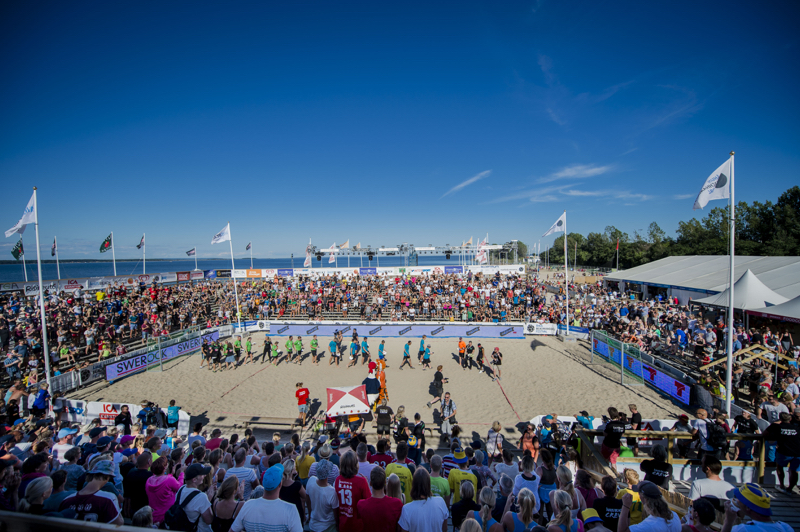
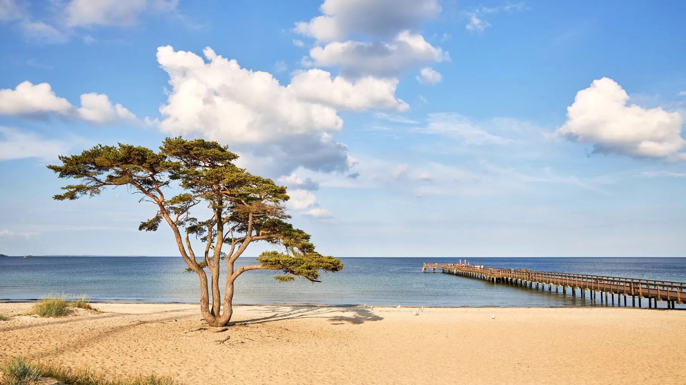

Top three activities to do in Åhus
Åhus Beach Handboll

Every summer the beach turns into a lively festival with thousands of players and visitors from all over the world.
Go to the Beach

The white sandy beach is perfect for swimming, sunbathing, and evening walks by the sea. Lots of people gather here to enjoy long, lazy summer days.
Otto Ice Cream

Otto & Glassfabriken is a local legend! Try one (or several) of their delicious flavors.